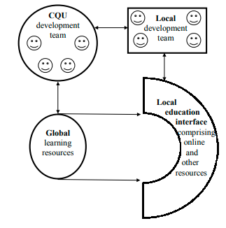
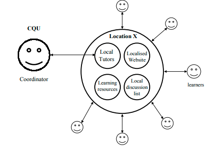

Let us consider the specific example of CQU facilitating learning in
Singapore.
CQU was originally offering programs in Singapore using distance
education (DE) materials together with local tutorial support – a sort of
“supported DE delivery.” This was the original “glocal” model, viz., global
learning resources with local learning support/mediation provided by local
tutors employed by our Singaporean partner. The penetration of communica-
tion and information technology in Singapore is considerably higher than in
most of the other CQU learning locations and so it was natural to make this
the first location for CQU to offer its programs online.
The first, and perhaps most important point to make about the Singapore
online project is that it was the result of emergent change. In an evolutionary
fashion, CQU added online interactivity and support to what it was already
offering in Singapore. Thus, the online programs in Singapore are not offered
in a pure online mode of delivery – instead they are offered in “supported
online mode,” i.e., with some printed DE materials, some face-to-face
tutorials and other campus-based support. This “supported online mode” is
simply an example of the flexible learning paradigm embraced by the
University, or more specifically, an example of the “glocal networked
learning paradigm.”
The communication and information technologies which enable us to
create the networked learning environment for the student also enable us to
create a networked education system in which lecturers, tutors and teaching
resources are all linked. In the CQU/Singapore network, a CQU academic
development team is responsible for the collection of the resources, the
creation of the materials and the development of the “global core” for the
supported online course. The global core is then electronically delivered to the
local partner in Singapore.
The local partner in Singapore is responsible for adding the local
education interface to the global core (see Figure 2). Thus, the online
component of the global core is mirrored on our partner’s server in Singapore
and the local partner then creates a website with the required local online
“look and feel.” The CQU academic development team works electronically
with the local development team to maintain quality control of this locally
added component
Figure 2: The "Glocal" resource development process
 As regards the facilitation of learning during the running of a particular
course, a lecturer on one Central Queensland campus is designated as the
coordinator of a particular unit (course), and that person, together with the
administration multi-campus support team, coordinates the activities of the
learning facilitators/tutors on all the other campuses on which that particular
course is taught. Thus, rather than dealing directly with a thousand students
on campuses all over the world, the CQU coordinator deals with the in-
country tutors who in turn facilitate the learning of the students. The local
campus/centre acts as a hub – a local network – as shown in Figure 3.
Through the coordinator, CQU is responsible for quality control of the
facilitation of the learning process. The usual quality control mechanisms are
used, including moderation of assignments, marking of examination scripts,
and site management visits
In this chapter, the authors have identified forces leading to change in
industries in the online world, including increasing global competition,
increasingly powerful consumers and rapid changes in technology, especially
those related to telecommunications. Implications for industry include mar-
ket transformations, the need for alliances, changes in outsourcing behavior,
the need for re-engineering, and changes in the role and type of intermediaries.
Figure 3: The local learning network linked to CQU
 In the higher education industry, pressures for change include global
competition and technology-facilitated learning. Outcomes are evolving, but
include the formation of alliances, outsourcing and re-engineering of systems
and work practices. In particular, the communication and information tech-
nologies that facilitate networked learning also link lecturers, tutors, and
teaching resources to create the possibility of networked education.
The particular “glocal” networked education paradigm that the authors
have outlined separates out four functions:
1) Development of the global core of learning resources;
2) Development of the local education interface;
3) Coordination of the learning facilitation on a specific occasion; and
4) Local learning facilitation.
An important distinction here for CQU is the separation of the develop-
ment and the teaching functions. By embracing this separation, CQU has been
able to develop ways of working which allow the creation of a scalable and
flexible model. In this model, however, the work of the university academic
is changed considerably.
The authors have shown how the online world tends to lead to vertical
disintegration in universities and results in the differentiated functions being
performed by alliance partners or being outsourced. In the same way, the
functions traditionally performed by a single university academic are differ-
entiated in the CQU “glocal” networked education paradigm and are per
formed by a network of learning facilitators. The distinction between aca-
demic and nonacademic university staff blurs as both take on more “learning
management” roles, for example, management of learning facilitators and
management of learning resources. In this scenario, university academics may
find themselves responsible for the learning of hundreds of students. They
may never, however, find themselves face-to-face with a single student.
AVCC. (2000). Australian Vice Chancellors Committee: Key Statistics
Internationalisation. Canberra: AVCC. Available on the World Wide
Web at: http://www.avcc.edu.au/australias_unis/statistics/
internationalisation/.
Brynjolfsson, E. and Hitt, L. M. (1998). Beyond the productivity paradox.
Communications of the ACM, 41(8), 49-55.
Coaldrake, P. and Stedman, L. (1999) Academic Work in the Twenty-first
Century: Changing roles and policies. Department of Education, Train-
ing and Youth Affairs (DETYA), Commonwealth of Australia: Canberra.
Available on the World Wide Web at: http://www.detya.gov.au/highered/
occpaper.htm.
Duderstadt, J. J. (1999). Can colleges and universities survive in the informa-
tion age? In Katz, R. N. & Associates (Eds.), Dancing With the Devil-
Information Technology and the New Competition in Higher Education.
San Francisco: Jossey-Bass.
Gibbons, M. (1998). Higher education relevance in the 21st century. UNESCO
World Conference on Higher Education, Paris, October 5-9.
Giddens, A. (1977). Studies in Social and Political Theory. London: Hutchinson.
Giddens, A. (1984). The Constitution of Society. Cambridge: Polity Press.
Giddens, A. (1991). Structuration theory: Past, present and future. In Bryant,
C. and Jary, D. (Eds.), Giddens’ Theory of Structuration: A Critical
Appreciation. Chapter 8. London: Routledge.
Gregor, S. and Johnston, R. B. (2000). Developing an understanding of
interorganizational systems: Arguments for multi-level analysis and
structuration theory. In Hansen, H. R., Bichler, M. and Mahrer, H. (Eds.),
Proceedings of the 8th European Conference on Information Systems,
Vienna, 3-5 July, 1, 575-582.
Gregor, S. and Johnston, R. B. (2001). Theory of interorganizational systems:
Industry structure and processes of change. Thirty-Fourth Hawaii Inter-
national Conference on System Sciences (HICSS-34). January. To
appear.
Holland, C. P. and Lockett, G. (1994). Strategic choice and interorganizational
information systems. In Nunamaker, J. F. and Sprague, R. H. (Eds.),
Proceedings 27th HICSS, vol IV, Collaboration Technology, Organiza-
tional Systems and Technology. Los Alamitos, CA: IEEE Computer
Society Press, 405-413.
Johnston, R. B. and Gregor, S. (2000). A structuration-like theory of industry-
level activity for understanding the adoption of interorganizational
systems, In Hansen, H. R., Bichler, M. and Mahrer, H. (Eds.), Proceed-
ings of the 8th European Conference on Information Systems, Vienna, 3-
5 July, 1, 567-574.
Klein, S. (1998). The diffusion of auctions on the Web. In Romm, C. and
Sudweeks, F. (Eds.), Doing Business Electronically. London: Springer,
47-63.
Malone, T., Yates, J., and Benjamin, R. (1987). Electronic markets and
electronic hierarchies: Effects of information technology on market
structure and corporate strategies, Communications of the ACM, 30(6),
484-497.
Markus, M. L. and Robey, D. (1988). Information technology and organiza-
tional change: Causal structure in theory and research. Management
Science, 34(5), 583-598.
McQuail, D. (1994) Mass Communication Theory: An Introduction. 3rd ed.,
London: Sage.
Orlikowski, W. J. and Robey, D. (1991). Information technology and the
structuring of organizations, Information Systems Research, 2(2),
143-169.
Rose, J. (1999). Frameworks for practice: Structurational theories of IS,
Proceedings of the European Conference on Information Systems.
Steinfeld, C., Kraut, R. and Chan, A. (1998). The impact of interorganizational
networks on buyer-seller relationships. in Romm, C. and Sudweeks, F.
(Eds.), Doing Business Electronically, Springer, London, 7-26.
Sylvan Learning Systems. (2001). Sylvan Learning Systems. Available on the
World Wide Web at: http://sylvanlearning.com/home.html.
Tsichritzis, D. (1999). Reengineering the university, Communications of the
ACM, 42(6), 93-100.
Turban, E., McLean, E. and Wetherbe, J. (1999). Information Technology for
Management, Wiley, New York.
Unext. (2001). Unext.com. Available on the World Wide Web at: http://
www.unext.com/.
Wallace, A and Yell, S. (1997). New literacies in the virtual classroom.
Southern Review, 30(3). Available on the World Wide Web at: http://
www.infocom.cqu.edu.au/Staff/Susan_Yell/Teaching/fmctl/liter.htm.
WGU. (2001). Western Governors University. Available on the World Wide
Web at: http://www.wgu.edu/wgu/index.html
Chapter III
The Potential Attraction of
Online Distance Education:
Lessons from the
Telecommuting Literature
Geoffrey N. Dick
University of New South Wales, Australia
Distance education involves both the student and the instructor in various
tasks associated with learning and testing the absorption of that learning. In
this chapter, parallels are drawn between educational and workplace tasks–
the understanding of prescribed material, assignments, experiences and
acquisition of knowledge on one hand and the components of a job on the
other. It draws on the telecommuting literature as it relates to telecommuting’s
attraction to the worker, the organization and the community, the importance
of the task, the technology required, the role of the supervisor and the
individual attributes one needs to be a successful teleworker. These are
brought together in a model aimed at providing a guide to the possible
adoption of distance education and enabling administrators to assess its
potential and some of the pitfalls that may be encountered.
Distance education, particularly online distance education is attracting
considerable attention from both providers of education and potential stu-
dents. There are many similarities between this form of education and
telecommuting. From the employer (or provider) perspective, there is the
attraction of a wider pool of potential recruits (read potential students),
savings on facilities and organizational infrastructure, meeting demand and
changing work practices. From a student perspective, the telecommuting
advantages of reduced travel, flexibility and the time to devote to other
commitments (work, family, etc.) are at least initially attractive.
The objective of this chapter is to review the telecommuting literature
and put forward a model that outlines the potential influences affecting the
adoption of distance education for use by academic institutions in their
decisions related to this area. Such a model may be helpful for research into
distance education too.
CHAPTER OVERVIEW
This chapter begins with a review of the benefits, costs and risks
associated with telecommuting (Gray et al., 1993; Turban & Wang, 1995;
Ford & McLaughlin, 1995; Ellis & Webster, 1997) for each of the three
components of the telecommuting arrangement–the individual, the organiza-
tion and the community, and suggests that several of the matters relevant here
have direct relevance to the distance education decision. In essence, these
issues form part of the drives and constraints which need to be present or
absent to some degree for telecommuting to take place. Other drives and
constraints include the suitability of the task, the attitude of the supervisor, etc.
This theme is continued by an examination of the enablers (Mokhtarian &
Salomon, 1994; Tung & Turban, 1996) which provides some insight into the
technological factors that are likely to influence the acceptance and potential
use of this form of education.
Using a theoretical task model to encompass the component, coordina-
tive and dynamic themes of complexity (Wood, 1986), the task characteristics
of uncertainty and equivocality (Daft and Macintosh, 1981) and the organi-
zational issues of resources and scheduling of work (Thompson, 1967), a set
of attributes for educational tasks is developed. It is suggested that this model
forms a central component of an overall model for the evaluation of the
suitability of educational tasks to distance education. In addition the task
model provides a firm basis for consideration of the appropriateness of the
attributes associated with various distance education tasks and the suitability
of those tasks.
Studying and learning from home will require particular student at-
tributes: some familiarity with computing and communications technologies
the ability to organize one’s self, and time management skills are all likely
to help the potential student. These personal attributes of the individual
have parallels in the telecommuting literature too. These are most likely
to be in the areas of personal characteristics such as the ability to get
information required, knowing when advice is needed, the ability to solve
one’s own problems and good self-management (Venkatesh & Vitalari,
1992; Gray et al., 1993; Wheeler & Zackin, 1994; Mokhtarian & Salomon,
1996a) and the home environment (Yap & Tng, 1990; Mannering &
Mokhtarian, 1995).
For many potential telecommuters, the supervisor is an important
figure in the decision to work from home. To some extent the role of the
Professor is analogous with that of the supervisor. As the supervisor
controls allocation, timing and resources for tasks (Starr, 1971), the
Professor controls task content, timing and the required resources. Ac-
cordingly, this literature, as it relates to telecommuting, offers some
assistance in studies of distance education.
Telecommuting literature also provides some pointers to demographic
influences on the preference to telecommute: age, gender, time in the
workplace, job type, education, transport, presence of small children, and the
number of cars in the household (Mokhtarian and Salomon, 1997; Belanger,
1999; Dick and Duncanson, 1999). Some of these seem to have relevance to
the decision to engage in distance education.
The chapter concludes with a discussion of the adoption model proposed,
relating it to a series of issues presently being encountered in distance education.
ADVANTAGES AND DISADVANTAGES
For the Individual
The telecommuting literature (Olson, 1983; Rice, 1987; Ford & Butts,
1991; Gray et al., 1993; Mokhtarian & Salomon, 1994; McQuarrie, 1994;
Turban & Wang, 1995) suggests the following as potential advantages and
disadvantages of telecommuting–each item is discussed with a view to its
applicability to the student undertaking distance education, assuming that
some form of information and communications technology will be used to aid
him in the associated tasks.
The Advantages
• Reasons associated with travel to work, such as reduction in commuting
stress, saving money and time and helping the environment. There is at
least some relevance here to distance education; not having to attend
on a regular basis may reduce travel costs for the student, particularly
if long distance travel is involved. In this context it should be noted
that reduction of living costs may be a significant factor for the
potential student. Also, this area might be broadened to include those
for whom travel would be impossible, such as those living abroad or
in remote areas.
• Better able to manage one’s own affairs; e.g., more independence,
flexibility, control of the physical working environment, to study or
pursue personal interests. This factor has particular relevance (perhaps
a very strong relevance to the postgraduate student, or the mature-age
student) in the sense of being better able to manage work commitments.
• To be able to work if sick, disabled or to look after a sick child or other
dependent. This potentially increases the possibility of education for
those who may be disabled or extensively involved in the care of
dependent children or other relatives.
• To reduce the stress experienced in the office. Relevant perhaps to those
who might find the campus environment threatening or intimidating.
• To spend more time with one’s family. A similar advantage for distance
education students.
• To get more work done. Campus life offers many distractions for the
student; while these are mostly seen as an advantage, some students may
benefit from the possibility of removing themselves from these distrac-
tions. On the other hand, many of the activities available to, and
experienced by, undergraduates on campus are part of the getting of
wisdom and their being unavailable may render the educational experi-
ence a poorer one.
The potential advantages get generally high exposure in the distance
education literature: accessibility, convenience, international (or recognized)
instructors and a “consumer orientation” (Alavi et al., 1997; Emmons, 1999),
allowing students to remain in a familiar environment, and the possibility of
advancing the emergence of global software development and discussion
(Passerini & Granger 2000), and the ability to continue education or keep up
to date while having only limited time available due to heavy work commit-
ments (Jana, 1999; Boisvert, 2000).
The Disadvantages
• More difficult to work at home due to less help available, motivational
problems, increased family conflict and distractions. One might expect
these to be serious impediments to distance education for many people,